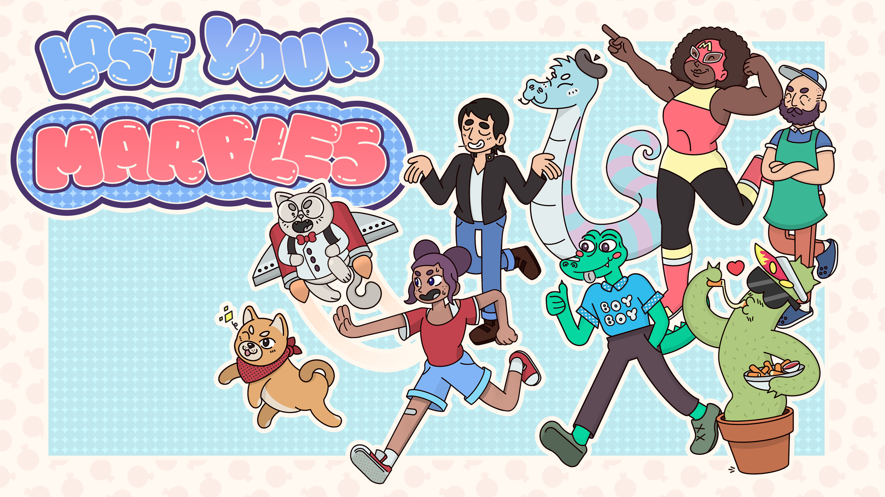
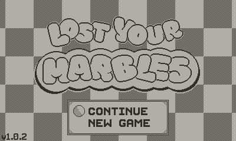
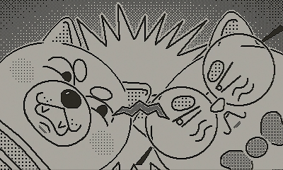
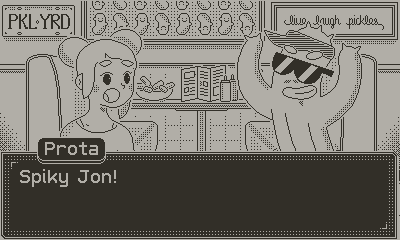
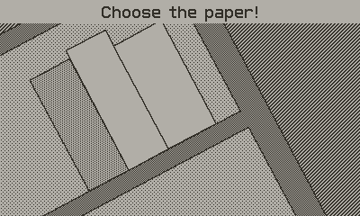
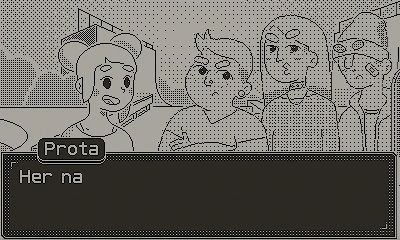
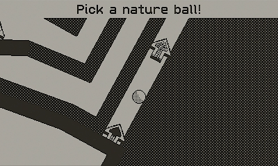
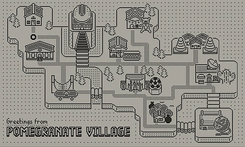
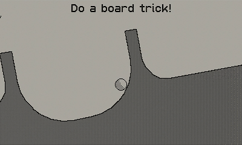

Role: Character Designer, Art Director, Lead Artist
Lost Your Marbles is a charming visual novel and puzzle game developed with the wonderful folks at Sweet Baby, and part of Playdate's first season of games. I was the character designer, art director, and lead artist.









Credits